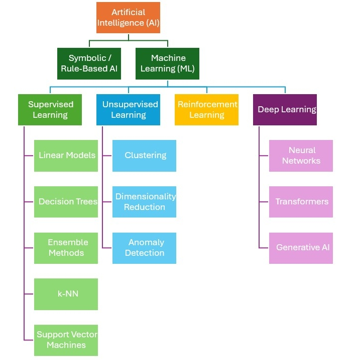
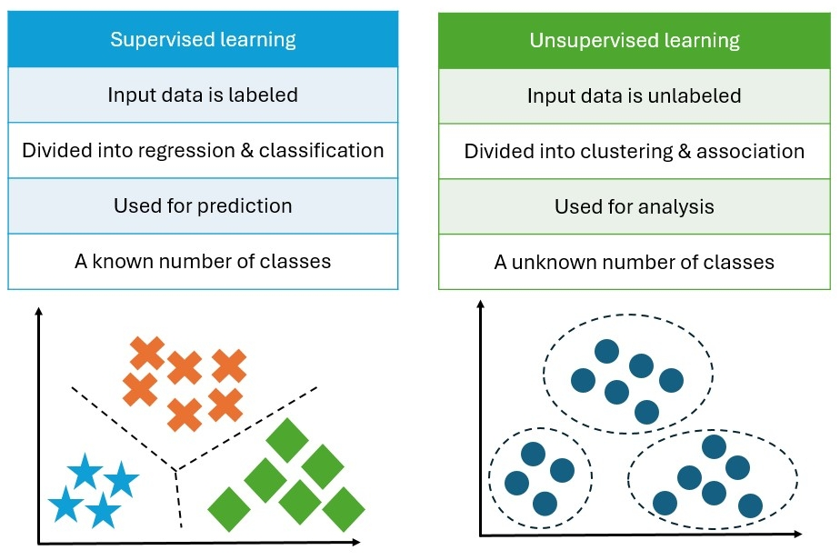
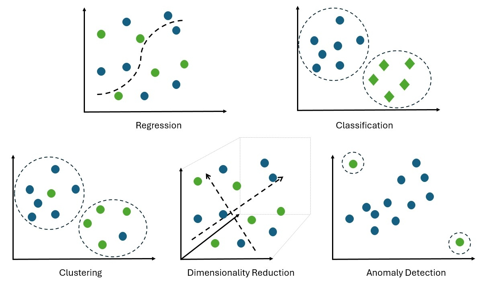
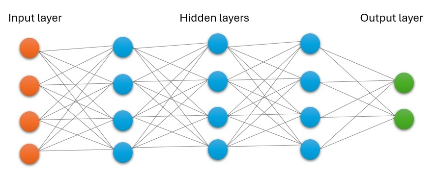

All in One View
Content from Introduction to geospatial data and analysis
Last updated on 2026-08-11 | Edit this page
Estimated time: 12 minutes
Overview
Questions
- What are the different formats of geospatial data?
- How can geographic phenomena be represented in data formats?
- What is spatial-temporal data and how is it used?
Objectives
- List different formats of geospatial data
- Describe geographic phenomena and their corresponding data formats
- Explain spatial-temporal data and its applications
- List data types and their properties for geospatial analysis
Geospatial data
Data is everywhere, and geospatial data is no exception. Geospatial data refers to information that has a geographic component, meaning it can be mapped to a specific location on the Earth’s surface. Think of satellite imagery, aircrafts, UAVs, GPS devices, mobile phones, and even social media platforms that collect GPS coordinates. This type of data is crucial for understanding spatial relationships and is invaluable for solving some of the greatest challenges, including climate change adaptation, natural disaster monitoring, water resource management, and food security for a growing global population.

Source: The European Space Agency (ESA), Copernicus Sentinel-2 image.
But how do we represent geospatial data? This is what we will explore in this lesson. We will discuss the different formats of geospatial data, how geographic phenomena can be represented in these formats, and the concept of spatial-temporal data.
To get started, we need to use a programming language that can read geospatial data and visualize it. In this lesson, we will use Python, a popular programming language that has a rich ecosystem of open-source libraries for data science and geospatial analysis. In the sections that follow, we will introduce you to the basics of geospatial data and analysis using Python. Make sure that you have followed the setup instructions in the lesson setup page before proceeding.
Data structures and formats
When we talk about formats of geospatial data, we are referring to the different ways in which geographic information can be represented. There are several formats, each with its own advantages and use cases. Some of the most common formats include:
Raster data: These formats represent geographic information as a grid of cells or pixels, where each cell has a value representing a specific attribute. Sometimes, raster data can be a group of images/bands that represent different attributes of the same geographic area. Common raster formats include GeoTIFF (.tif), NetCDF (.nc), and HDF5 (.hdf5).
Vector data: These formats represent geographic features as points, lines, and polygons. Common vector formats include Shapefiles (.shp), GeoJSON (.geojson), and KML (.kml).
Tabular data: These formats store geographic information in a tabular structure, often with latitude and longitude coordinates. Common tabular formats include CSV (.csv).
Triangulated Irregular Networks (TINs): These formats represent geographic surfaces as a network of interconnected triangles. TINs are often used for representing terrain and elevation data. One of the common TIN formats is LAS (.las).
Point Clouds: These formats represent geographic features as a collection of points in three-dimensional space. Point clouds are often used for representing 3D models of buildings, landscapes, and other objects. Common point cloud formats include LAS (.las).
Databases: These formats store geographic information in a database, allowing for efficient querying and analysis. Common database formats include PostGIS (an extension of PostgreSQL) and SpatiaLite (an extension of SQLite).
Trajectories: These formats store the movement of objects over time, often with timestamps and coordinates. Common trajectory formats include GPX (.gpx) and CSV (.csv).
 License: CC BY-SA 4.0.
License: CC BY-SA 4.0.
To learn more about raster and vector data, check out these lessons:
Challenge 1: the format of our dataset
Look at the dataset we will be using in this lesson. What format is it in? Is it a raster, vector, tabular, database, or trajectory format? How do you know?
Geographic phenomena
Geographic phenomena can be represented in different data formats depending on the nature of the phenomenon and the type of analysis being conducted. For example, a raster format is used to represent temperature or precipitation data, while a vector format is used to represent the locations of cities or rivers. Tabular formats are used to store demographic data, while TINs are used to represent terrain and elevation data. Point clouds are used to represent 3D models of buildings or landscapes, while databases may be used to store large amounts of geospatial data for efficient querying and analysis. Trajectories are used to represent the movement of objects over time, such as the migration patterns of animals or the movement of vehicles.
Challenge 2: the geographic phenomena in our dataset
Look at the dataset we will be using in this lesson. What geographic phenomena are represented in this dataset? We can read the dataset using xarray and geopandas to visualize the data and identify the geographic phenomena.
Spatial-temporal data
Usually geospatial data is not only spatial but also temporal. This means that the data has a time component, allowing us to analyze how geographic phenomena change over time. A sequence of data points collected over time is called a timeseries, and can be used to analyze trends, patterns, and relationships in the data. For example a timeseries of satellite imagery can be used to monitor changes in land use or vegetation cover over time, while a timeseries of GPS data can be used to track the movement of an object.
We often use standard formats and a coordinate reference system to represent location and time information.
Challenge 3: Spatial-temporal information in our dataset
Look at the dataset we will be using in this lesson. What spatial-temporal information is represented in this dataset? We can read the dataset using xarray and geopandas to visualize the data and identify the spatial-temporal information.
To learn more about coordinate reference system, check out these lessons:
Data types and their properties
Until now we have discussed the different formats of geospatial data, but it is also important to understand the different data types and their properties. Data types refer to the different kinds of values that can be stored in a dataset, such as integers, floats, strings or categorical, and booleans. Each data type has its own properties and limitations, which can affect how the data is analyzed and stored.
Range, distribution, missing values, and outliers
When computing some statistics on geospatial data, or visualizing it, we may want to know the range of values, the distribution of values, and whether there are any missing values or outliers in the dataset. Sometimes these information are provided in the metadata of the dataset, but sometimes we need to compute them ourselves.
Missing values can occur when data is not collected or recorded for a particular location or time period, and can be represented as NaN (Not a Number) or null values in the dataset. Outliers are values that are significantly different from the rest of the data and can skew our analysis. In most of the applications, we identify and handle missing values and outliers appropriately, either by removing them from the dataset or imputing them with estimated values based on the surrounding data.
We will discuss how to prepare data in episode 3, but for now we will just visualize the data and identify any missing values or outliers in the dataset.
Identifying missing values and outliers
Reading and visualizing the dataset using xarray and geopandas….
Challenge 4: Missing values and outliers in our dataset
Look at the dataset we will be using in this lesson. What missing values and outliers are represented in this dataset? We can read the dataset using xarray and geopandas to visualize the data and identify the missing values and outliers.
- Geospatial data refers to information that has a geographic component, meaning it can be mapped to a specific location on the Earth’s surface.
- There are several structures and formats of geospatial data, including raster, vector, tabular, TINs, point clouds, databases, and trajectories.
- Geographic phenomena can be represented in different data formats depending on the nature of the phenomenon and the type of analysis being conducted.
- Spatial-temporal data has a time component that allows for the analysis of how geographic phenomena change over time.
- Data types refer to the different kinds of values that can be stored in a
- dataset, such as integers, floats, strings or categorical, and booleans.
Content from Machine learning concepts for geospatial data
Last updated on 2026-09-15 | Edit this page
Estimated time: 12 minutes
Overview
Questions
- What is machine learning and how is it used for geospatial data analysis?
- What is the difference between supervised and unsupervised learning?
- What is the difference between machine learning and deep learning?
- When should you use machine learning for geospatial data analysis?
Objectives
- Explain machine learning concepts for geospatial data
- Describe difference between supervised and unsupervised learning
- Describe the difference between regression, classification and clustering tasks
- Describe the difference between machine learning and deep learning
- Explain the usefulness of machine learning for geospatial data analysis
Machine learning
In data analysis, we often define a mathematical algorithm to show the relationship between a set of input variables and an output variable. This is called a model. In mathematical notation, the predicted value \(\hat{y}\) can be written as:
\(\hat{y}(w, x) = w_0 + w_1 x_1 + \dots + w_n x_n\)
Where \(w\) are the model parameters, \(x\) are the input variables or “data matrix”. We can adjust the model parameters \(w\) to improve how well the model can produce the output variable from the input variables. Therefore, we are interested in the difference between the predicted value \(\hat{y}\) and the true value \(y\). This is called the “error”, and we can write its magnitude as:
\(e = |y - \hat{y}|\)
The process of adjusting the model parameters to minimize the error is called “training” the model. One way to do this is to use a lot of samples of input and output data, and use an “optimization” algorithm to find the best model parameters that minimize the error. This is called “fitting” the model to the data. In other words, the model “learns” from the data by adjusting its parameters to minimize the error. When we find the best model parameters that minimize the error, we can use the model to make predictions (or inferences) on new data. Whether the predictions are useful depends on the training data, evaluation metrics, and the generalization ability of the model.
The whole process of training a model, defining optimization algorithms, and using the model to make predictions is called machine learning (ML).
Data matrix
A data matrix is a structured representation of data where rows typically correspond to individual samples or observations, and columns correspond to features or variables. In the context of machine learning, the data matrix is used as input to train models and make predictions.
Machine learning family tree
Machine learning (ML) is a subset of artificial intelligence (AI). Artificial intelligence (AI) is the capability of a machine or software system to perform tasks that would normally require human intelligence, such as learning from data, recognising patterns, making decisions, or generating outputs.
AI research began with rule-based approaches focused on logic. Rule-based systems are deterministic, in other words the same inputs always lead to the same outputs, and the rules governing behaviour are explicitly defined.
AI research then moves toward statistical and data-driven methods. Rather than following fixed rules, these systems use statistical models to learn patterns from data and make predictions, classifications or risk estimates.
Deep learning is a subset of machine learning that uses neural networks with many layers to learn representations of data. Neural networks are composed of interconnected layers of nodes (neurons) that transform input data into meaningful output through learned weights and activation functions.

Supervised and unsupervised learning
Supervised machine learning involves the use of labelled datasets (or annotated datasets) to train models. Unsupervised machine learning, on the other hand, attempts to identify meaningful patterns within unlabelled datasets.

Challenge 1: supervised or unsupervised learning?
Look at the dataset we will be using in this lesson. We want to … (FIXME)
Machine learning tasks
Machine learning tasks can be broadly categorized into several types, including:
- Regression: Predicting a continuous numerical value based on input features.
- Classification: Assigning input data to one of several predefined categories.
- Clustering: Grouping similar data points together without predefined labels.
- Dimensionality Reduction: Reducing the number of input features while preserving important information.
- Anomaly Detection: Identifying unusual or rare data points that deviate from the norm.

Deep learning
Deep learning is a subset of machine learning that uses neural networks with multiple layers. These networks are capable of learning complex patterns and representations from large amounts of data.

Neural networks consist of interconnected layers of nodes (neurons) that process input data through weighted connections and activation functions.
Each neuron … - has one or more inputs, - most of the time, conducts 3 main operations: - take the weighted sum of the inputs - add a bias term (i.e., constant weight) - apply an “activation function” to the result; an activation function converts the weighted sum of the inputs to the output signal of the neuron. - produce an output that is passed to the next layer of neurons.
Challenge 2: Activation functions
Model parameters
During training, the neural network adjusts the weights and biases of the connections between neurons to minimize the error between the predicted output and the true output. The weights and biases are the model’s parameters; when you read about, for example a model having 1 million parameters, it means that the model has 1 million weights and biases that can be adjusted during training.
Geospatial machine learning
Geospatial ML is the application of machine learning techniques to data with a spatial and spatio-temporal components.
Machine learning is a powerful tool for geospatial analytics because it can leverage large amounts of spatial data, time series data, satellite and aerial imagery, or any other form of geographic information to do tasks such as predictions, classification, or identifying patterns in the data. The application of machine learning to geospatial data is vast; for example, predicting the spread of wildfires, classifying land cover types, or identifying areas at risk of flooding.
Content from Prepare geospatial data for machine learning
Last updated on 2026-07-10 | Edit this page
Estimated time: 12 minutes
Overview
Questions
- What is machine learning and how is it used for geospatial data analysis?
- What is the difference between supervised and unsupervised learning?
- What is the difference between machine learning and deep learning?
- When should you use machine learning for geospatial data analysis?
Objectives
- Clean and prepare geospatial data for a given task
- Identify and handle missing values in geospatial data
- Use feature extraction and selection techniques
- Create feature and target variables for machine learning models
Introduction
In this lesson ….
Inline instructor notes can help inform instructors of timing challenges associated with the lessons. They appear in the “Instructor View”
Challenge 1: Can you do it?
What is the output of this command?
R
paste("This", "new", "lesson", "looks", "good")
OUTPUT
[1] "This new lesson looks good"Challenge 2: how do you nest solutions within challenge blocks?
You can add a line with at least three colons and a
solution tag.
Figures
You can use standard markdown for static figures with the following syntax:
{alt='alt text for accessibility purposes'}
Callout sections can highlight information.
They are sometimes used to emphasise particularly important points but are also used in some lessons to present “asides”: content that is not central to the narrative of the lesson, e.g. by providing the answer to a commonly-asked question.
Math
One of our episodes contains \(\LaTeX\) equations when describing how to create dynamic reports with {knitr}, so we now use mathjax to describe this:
$\alpha = \dfrac{1}{(1 - \beta)^2}$ becomes: \(\alpha = \dfrac{1}{(1 - \beta)^2}\)
Cool, right?
- Use
.mdfiles for episodes when you want static content - Use
.Rmdfiles for episodes when you need to generate output - Run
sandpaper::check_lesson()to identify any issues with your lesson - Run
sandpaper::build_lesson()to preview your lesson locally
Content from Select machine learning algorithms
Last updated on 2026-07-10 | Edit this page
Estimated time: 12 minutes
Overview
Questions
- What are some common ML algorithms and their typical use cases?
- What are strengths and limitations of traditional ML algorithms?
- What are strengths and limitations of deep learning architectures?
Objectives
- Describe common ML algorithms and their typical use cases
- Compare traditional ML algorithms and deep learning architectures in terms of strengths and limitations
Introduction
In this lesson ….
Inline instructor notes can help inform instructors of timing challenges associated with the lessons. They appear in the “Instructor View”
Challenge 1: Can you do it?
What is the output of this command?
R
paste("This", "new", "lesson", "looks", "good")
OUTPUT
[1] "This new lesson looks good"Challenge 2: how do you nest solutions within challenge blocks?
You can add a line with at least three colons and a
solution tag.
Figures
You can use standard markdown for static figures with the following syntax:
{alt='alt text for accessibility purposes'}
Callout sections can highlight information.
They are sometimes used to emphasise particularly important points but are also used in some lessons to present “asides”: content that is not central to the narrative of the lesson, e.g. by providing the answer to a commonly-asked question.
Math
One of our episodes contains \(\LaTeX\) equations when describing how to create dynamic reports with {knitr}, so we now use mathjax to describe this:
$\alpha = \dfrac{1}{(1 - \beta)^2}$ becomes: \(\alpha = \dfrac{1}{(1 - \beta)^2}\)
Cool, right?
- Use
.mdfiles for episodes when you want static content - Use
.Rmdfiles for episodes when you need to generate output - Run
sandpaper::check_lesson()to identify any issues with your lesson - Run
sandpaper::build_lesson()to preview your lesson locally
Content from Create a ML modeling pipeline/workflow
Last updated on 2026-07-10 | Edit this page
Estimated time: 12 minutes
Overview
Questions
- How do you fit a machine learning model to geospatial data?
- How to evaluate the performance of the models using different metrics?
- What is overfitting and underfitting in machine learning models?
- How to tune hyperparameters to improve model performance?
Objectives
- Fit a machine learning model to geospatial data
- Apply training, testing, and validation sets to evaluate the performance of models
- Describe metrics for model performance evaluation
- Identify overfitting and underfitting in models
- Explain the role of hyperparameters and model complexity
Introduction
In this lesson ….
Inline instructor notes can help inform instructors of timing challenges associated with the lessons. They appear in the “Instructor View”
Challenge 1: Can you do it?
What is the output of this command?
R
paste("This", "new", "lesson", "looks", "good")
OUTPUT
[1] "This new lesson looks good"Challenge 2: how do you nest solutions within challenge blocks?
You can add a line with at least three colons and a
solution tag.
Figures
You can use standard markdown for static figures with the following syntax:
{alt='alt text for accessibility purposes'}
Callout sections can highlight information.
They are sometimes used to emphasise particularly important points but are also used in some lessons to present “asides”: content that is not central to the narrative of the lesson, e.g. by providing the answer to a commonly-asked question.
Math
One of our episodes contains \(\LaTeX\) equations when describing how to create dynamic reports with {knitr}, so we now use mathjax to describe this:
$\alpha = \dfrac{1}{(1 - \beta)^2}$ becomes: \(\alpha = \dfrac{1}{(1 - \beta)^2}\)
Cool, right?
- Use
.mdfiles for episodes when you want static content - Use
.Rmdfiles for episodes when you need to generate output - Run
sandpaper::check_lesson()to identify any issues with your lesson - Run
sandpaper::build_lesson()to preview your lesson locally
Content from Challenges of spatial and temporal modelling
Last updated on 2026-07-10 | Edit this page
Estimated time: 12 minutes
Overview
Questions
- Why can random train-test splits be misleading in geospatial analysis?
- What is spatial and temporal cross-validation?
- What are computational constraints when working with large geospatial data?
Objectives
- Explain spatial autocorrelation and why random train-test splits can be misleading
- Describe spatial and temporal cross-validation
- Identify computational and infrastructure constraints when working with large geospatial data
- Discuss strategies to address these challenges in machine learning models
Introduction
In this lesson ….
Inline instructor notes can help inform instructors of timing challenges associated with the lessons. They appear in the “Instructor View”
Challenge 1: Can you do it?
What is the output of this command?
R
paste("This", "new", "lesson", "looks", "good")
OUTPUT
[1] "This new lesson looks good"Challenge 2: how do you nest solutions within challenge blocks?
You can add a line with at least three colons and a
solution tag.
Figures
You can use standard markdown for static figures with the following syntax:
{alt='alt text for accessibility purposes'}
Callout sections can highlight information.
They are sometimes used to emphasise particularly important points but are also used in some lessons to present “asides”: content that is not central to the narrative of the lesson, e.g. by providing the answer to a commonly-asked question.
Math
One of our episodes contains \(\LaTeX\) equations when describing how to create dynamic reports with {knitr}, so we now use mathjax to describe this:
$\alpha = \dfrac{1}{(1 - \beta)^2}$ becomes: \(\alpha = \dfrac{1}{(1 - \beta)^2}\)
Cool, right?
- Use
.mdfiles for episodes when you want static content - Use
.Rmdfiles for episodes when you need to generate output - Run
sandpaper::check_lesson()to identify any issues with your lesson - Run
sandpaper::build_lesson()to preview your lesson locally